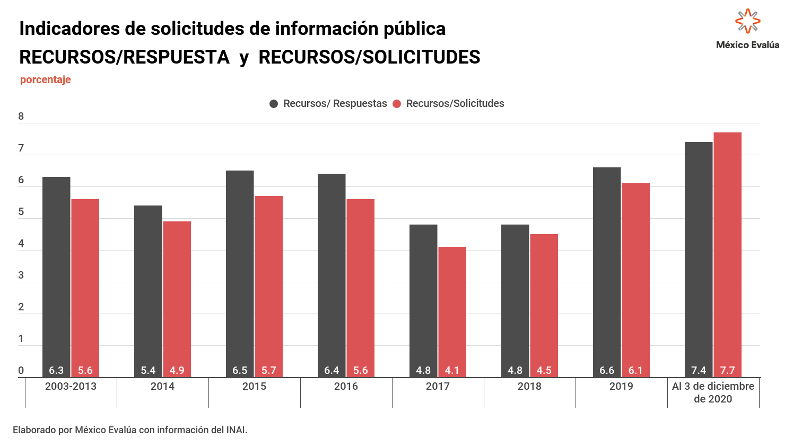

"...Por lo tanto, defender al INAI en ésta coyontura, es defender la apuesta institucional por la garantía de un derecho constitucional a toda democracia, el derecho a sabaer. Plantar un falso dilema entre uno u otro es como 'Garantizar' el derecho a todo mexicano de conocer Europa,siempre y cuando sea bueno nadando"
Que es la verdad? La verdad es que constitucionalmente los mexicanos tenemos derecho a una vivienda digna,al libre transito al voto,al trabajo, seguridad social y muchos otros derechos, está por demás decirles que incluso estamos entrando en la discusion de los derechs de tercera generacion. entonces por que el estatdo falla incluso con respecto a los de primera generacion?
Debemos suspirar mientras vemos alejarse la posibilidad de que nuestros derechos, sean cuales fueren, se respeten? aqui es donde el Plot Twist sale duro, una de las contradicciones má exorcisantes es la manera neoliberal de: Desaoarecer las instituciones autonomás porque nos salen muy caras y mejor que el poder Ejecutivo sea el unico responsable de rendirle cuentas a los mexicanos.
Concentrar esa cantidad de poder en el ejecutivo nos recuerda epocas de México en las que se cometieron cantidad de atrocidades, dentro de un país lleno de obscuridad no habrá lugar para el analisis desde afuera, rendirnos cuentas sólo desde las oficinas donde tú eres el jefe culero de todos, no es la manera en que definimos la transparencia en mi país (la ultima vez que chequé mi bandera, aun no teniamos estrellas).
"El de la transparencia, cuesta mil millones de pesos mantener ese organismo. Se creó y ¿en qué ha contribuido para reducir la corrupción? Al contrario, la corrupción creció como nunca, a la par de que se creó este organismo. Los sueldos de los del Instituto de la Transparencia hasta de 300 mil pesos mensuales. Otro instituto, el de la Evaluación Educativa, mil 500 millones de pesos. Lo mismo, los altos funcionarios bien atendidos, bien servidos”, destacó López Obrador" Articulo del 2018 - Excelsior: ISABEL GONZÁLEZ No es un problema nuevo, una semana despues de tomar posesiósn mi papi AMLO criticós los sueldos elevados y lo caro que le sale a la ciudadania insitutos autonomos, que ni sabemos que los teniamos hasta que los quieren desaparecer, el presidente recordo que a principios de 2010 este organizmo ocutó toda la información sobre la condonación de los impuestos a grandes contribuyentes,"y por cierto, vence en 2019 recordó" También mencionando el caso Odebrecht donde ocultaron toda la información que presume conductas indevidas en la campaña del pri en 2012.
Esta corrupto y es costoso? , de lo primero tenemos evidencia y de lo segundo es algo complicado jaja, la respuesta corta podría ser que: si pero la comparación no es clara, Derek Bok decia que no faltará quien crea que la educación cuesta muy cara, hasta que compara su costo con el de la ignorancia. Con la desaparicion de las evaluaciones educativas en una institucion que necesita atencion urgente y acabando con el acceso a la información mediante alguna fuente/institución confiable, donde estaríamos parados? nos suena utopico y primer-mundista un país cuya información no puede ser verificada por un organismo gubernamental? Parecemos olvidar aquel imperio sexenal de un solo hombre, la manera en que se construyó una fragil democracia despues de una epoca tan sombría como la que promete este sexenio.
El articulo sexto de la constitución mexicana es lo unico que garantiza la capacidad de ciudadanos y periodistas el acceso a la información gubernamental con un poco de imparcialidad.. Y entrando al buen terreno de la fantasía , la Constitución Mexicana enuncia un puñado de de derechos para los cuales existen instituciones que pueeden garantizarlos, pero para todas las demás paginas todo termina en un punto, derechos escritos y sellados en una hoja de papel que poco vale cuando se carece de organizmos que puedan responder cuando alguno de ellos se vea violentado. La salud misma de una Republica debe poder cuestionarse desde cualquier indole, con los datos incomodos que la marcarán y sorprendentemente tambien aquellos que nos dicen cuánto y cómo ha mejorado la nación
No creo que debamos abogar por la información a estas alturas, porque conocemos la influencia que la misma puede tener en la construccion de nuestra nación,nuestra gran promesa escrita en aquel tumulto de paginas con un aguila de adorno, mientras los años de progreso para el acceso a la información son derrumbados por la rabieta de un mandatario tan cercano al ojo del pueblo;que ahora lo vemos borroso.
Para que quieren al INAI si me tienen a mi?
una de las dudas que creo rondan la cabeza de mi presidente es justo esa, pareciera que se trata de un tema de mera confianza sin acordarse de la cantidad de veces que criticó los gobiernos opacos que no daban "las cuentas" a sus ciudadanos, una critica bien hecha si tan solo no viniera del mandatario que se reserva la información de sus MEGA-Proyectos durante el sexenio, para que pueda salir sin raspones y se le juzgue igual que cómo se nos prometió con sus contrincantes.
Quizá una ironía parecerá que nuestro mandatario terminara pareciendose tanto al ex-ganador detrás del muro. Se considera que uno de los rasgos más destructivos de la administración de Trump fue su constante esfuerzo por politizar y debilitar el desempeño politico profesional sin perar de remplazar funcionarios públicos profesionales por personas evidentemente incompetentes, elegidas solo para acrecentar la lealtad política del presidente. Eso se dice de Trump y creo que el escalofrío nos recorre a todos, pero quizá es un escalofrío nostalgico en el que recordamos alguno de los tantos episodios en que se nombraron personas como lo hace cualquier gobierno democrático Elvira Concheiro fue nombrada como Tesorera de la Federación, sin tener formación o experiencia profesional en el campo de finanzas ni en Economía pero en ella recae la responsabilidad de 6,260 billones de pesos y en un momento historico en la economía mexicana, por primera vez despues de 18 años sin recursos en los fondos de estabilización y con una debilidad acentuada en los ingresos publicos, con especial preocupacion en PEMEX. Pero sin que esto nos quite el asombro, podemos mencionar que pasó un poco de lo mismo con la CNDH, Comisionados de la CRE y un largo etc...
El INAI nace como un organo desconcentrado de la Secretaría de Gobernación y fue precisamente su falta de autonomía la que impulsó a que en 2014 y 2015 muchos ciudadanos exigieran el cambio del IFAI por INAI. Ahora se ha generado una alza a la solicitud de la información, la demanda anual media de solicitudes de información crecio un 400% cuando el IFAI se convirtió en un organismo autónomo. de 2003 a 2014 la demanda anual era de 78,000 solicitudes de información. que de 2015 a 2020 aumentó a 373 000 al año . Solicitudes de Información por Sujeto Obligado Solicitudes de Información por Estado
Dentro de lo que hace a la 4T atacar, estánn los indicadores de recursos y solicitudes que presenta el INAI en los que claramente se ve una respuesta carente de los funcionarios obradoristas para mantener los niveles de informaciónn púnblica otorgada a la insituciónn.

Puede ser el miedo a un estado Autoritario, quizán la gran dificultad que ya existe para el ejercicio de la oposiciónn políntica o la idea de una sociedad que no puede participar de manera informada en la vida púnblica con sus opiniones: no se cual de las ideas es la que me hace preocuparme un poco por la insituciónn de la que no tenína idea por la mañana. En Ménxico los cargos de la administraciónn central son otorgados por los secretarios y el presidente a personas que forman parte de estas redes informales de amistad y compadrazgo sin ningúnn tipo de filtro competitivo o credenciales a comprobar.Los derechos públicos y de los ciudadanos se ven tutelados por una administraciónn politizada y poco experta lo que frena el funcionamiento de algunas instituciones y dificultan la implementaciónn de aquellas politicas púnblicas que requieren máns de un sexenio para empezar a operar como todo buen paíns pre-moderno, en el que alzarse el cuello y la lealtad a los partidos rigen la políntica. La desapariciónn del Instituto representaria un retroceso en nuestro camino de convertirnos en un estado moderno algo que el ínfimo presupuesto otorgado al INAI no resolvería, porque del 2.3% del presupuesto total del gobierno federal otorgado a organismos autonomos solo le corresponde un 0.01% a esta institución No podemos dejarnos polarizar dentro de una administración tan expuesta a los antojos presidenciales o a los intereses politicos del momento.
Jurgen Habermas plantea que: "la falta de opinión pública , siendo ésta uno de los más fuertes contrapesos del poder, solo es la señal de una democracia que se extingue". En los sistemas y modelos autoritarios o totalitarios, los derechos y libertades que pueden suponer el surgimiento de crítica,debate,interpretación y oposici&nacuten son suprimidos por la influencia que tienen en dinamizar el espacio público. La información se vuelve una parte primordial en el sistema político al que se aspira, en el que se apuesta por cidadanos informados con una oposición galopante y atenta de marcar los errores con los que se encuentra el poder durante su desempeño.
El año pasado 2020 se reportaron cerca de 1,000,000 (Un millón) de solicitudes de información y caso 17,000(diesiciete mil) medios de impugnación presentados, todas estas solicitudes estan hechas sobre una institución que al menos intenta no ser una marioneta más del poder político. En epoca de pandemia, poco se ve al lente de la transparencia en la información y aunque el presidente amenace con desaparecerla, el INAI ordenó a la Secretaría de Salud entregar la versión pública de la base de datos del Subsistema Epidemiológico y Estadístico de Defunciones que revelaría las defunciones registradas entre el 1ro de enero y el 10 de septiembre del 2020.
“El proceso de consolidación de la información a través del subsistema en comento no concluye con la toma de una decisión o postura institucional ni reviste el carácter de negociación en la que esté involucrado el Inegi, en tanto que solo se trata de un proceso de validación de datos capturados o recabados en el subsistema”, argumentó Blanca Lilia Ibarra, comisionada presidenta del INAI en respuesta al Sistema Nacional de Salud que considera "reservada" éste tipo de información. “la información solicitada en este asunto constituye un insumo indispensable para sistematizar la prevalencia de las defunciones y sus determinantes en distintas regiones del país, conocer su frecuencia, mejorar el entendimiento de esta enfermedad y también nos permitirá realizar comparaciones entre otros países”. además agrega que conocer con certeza el indicador de "exceso de mortalidad" resulta de grán utilidad en la crisis del Covid-19, pues contribuye a poder medir su impacto real.
José Miguel Vivanco cuestionó al presidente para Human Rights Watch, por la tentativa a eliminar el instituto nacional de transparencia por otro lado el presidente comenta: “Celebro que ya se haya iniciado el debate sobre estos organismos que se crearon durante el periodo neoliberal. Lo que han hecho es servir de cortinas de humo para que se cometan ilícitos y haya ocultamiento de información” Con esto se comprueba la opinion del consejero y expresidente del INAI , Franncisco Acuña Llamas que asegura es dificil sortear las ciricas del presidente, pero recuerda que el instituto de transparencia no nació para complacer al poder ni celebrar las acciones del gobierno. En el Barometro Regional de Datos Abiertos para América Latina y el Caribe 2020 pudimos ver un decenso al 5to lugar despues de ocupar el 1er lugar durante 2015 y 2016. Por un lado, en la dicusion frente al ojo público, se ataca al INAI pero el gabinete los reune y sigue trabajando de manera muy cercana con la institución, recordando que existe para auditar al gobierno, para hacer que el gobierno deliberadamente omite o no quiere decir
"Del 3 de Mayo para acá la secretaría de Salud y todas las relacionadas ,que son cientos, se les dijo que de ninguna manera pueden esconderse y no se le está exponiendo a alguien que vaya a buscar información a un archivo, porque la información solicitada existe de manera digital, tambien se vio disminuída en un 30% la solicitud hecha a la institución" Entrevista Con Francisco Acuña
Pero entonces el INAI si servía? , la pregunta real es el para qué servía , el INAI ayuda a garantizar la transparencia en la información, pero tan solo es una herramienta que sin alguien que la lleve a la realidad, son numeros y tablas de colores. Sin fiscalías que sirvan, auditorías que investiguen, sin jueces o tribunales que sancionen, pero sin una de las cosas más importantes, una sociedad que castigue con el voto a aquellos politicos,funcionarios e instituciones que transgreden las normas
Como puede suponerse en 20 años la transparencia no se ha internalizado, no logramos que los diferentes organismos se hagan responsables de volver p&uacutrblica su información con lo que estamos obligados a seguir manteniendo a un instituto como el INAI En algounos paises con leyes y sanciones por incumplimiento de la publicacion de informacion en poder de los gobiernos no se ve la necesidad de una institución que los regule "El Inai no debería existir. Pero mientras alcanzamos el estado de las cosas como deben ser, muchas cosas que no deberían existir deben existir" Twitter @holasoto
Obtener la categoría de nivel adecuado de un tercer país en materia de protección de datos personales es uno de los supuestos de garantías suficientes para llevar a cabo una transferencia internacional de datos desde la Unión Europea. Esto durante el foro Protección de Datos Personales y Gestión de la Pandemia: Retos 2021, convocado por la Universidad de las Américas de Puebla - Jenkins Graduate School (UJGS). México se ubica en el segundo lugar de los países de la región que reciben el mayor número de ataques, con el 27.8%; el primero lo ocupa Brasil, con 59.5% y, el tercero, Colombia con 7.33%, esto según datos de la compañía de seguridad informática Kaspersky. la presidenta de la Comisión Nacional de Informática y Libertades de Francia, Marie-Laure Denise, sostuvo que si bien se deben explorar las oportunidades que ofrecen las tecnologías para la contención de la pandemia, también se deben definir sus límites y riesgos para los derechos humanos.
Del lejano 23 de marzo al 17 de diciembre , durante la pandemia se presentaron al INAI 677 denuncias por uso indebido de datos personales en el sector privado y 68 en el sector público , durante los primeros 11 meses del añ 2020 sumó casi 40 millones de pesos por distintas infracciones en las que el INAI impuso multas por un monto total de 39,324,000 pesos a personas fisicas y morales que infringieron la Ley Federal de Protección de Datos personales en Posesión de Particulares.
el tratamiento de datos personales en contravención de los principios previstos en la Ley; recabar o transferir información personal sin el consentimiento de los titulares; obstruir actos de verificación de la autoridad; omitir uno o más requisitos en el Aviso de Privacidad, y el manejo indebido de datos sensibles.
En la entrevista que tuvo Aristegui con la periodista Claudia Ocaranza, comenta la situación actual de la Secretaría de la Defensa que el INAI intervino retomando las solicitudes de información que hacían las plataformas públicas, recordandonos un poco la importancia de que existan estas instituciones que tengan el poder de exigir respuestas a una institución como SEDENA
El protocolo natural a seguir es reportar todos los contratos por bienes o servicios en Compranet Hacienda pero al darnos cuenta de que no estaban se dio seguimiento a la retención de los contratos que justifican los diferentes gastos, cabe aclarar igual a muchas otras instituciones federales, al final se pidio através del INAI que se diera acceso en los meses de Abril 2020 , en la primera revision que se solicitan los contratos SEDENA responde con "Nosotros no estamos haciendo ningun contrato" , pero eso no era posible ya que incluso el Secretario de la Defensa había hablado de esos contraros en los reportes diarios desde palacio nacional(La casa del presidente), al llegar a finales de Agosto ya con mediación del INAI se respondio a la solicitud con copias simples poco mas de 200 contratos entregados en papel , despues de hacer el llenado de bases de datos con la informacion otorgada se compararon los contratos que se reportaron en Compranet y aquellos que no , para intentar entender por qu&racute habian sido escondidos pero ahora toda esta información se encuentra en: Compras Covid MX
Hoy sabemos que 51 contratos representan más de 700 millones de pesos, sin contar aquellos contratos que manejan presupuestos "Maximos y minimos" donde no podremos determinar cuanto le estan costando al país
En la constitución política de los Estados Unidos Méxicanos se da cuenta de que el derecho a la información quedará garantizado por el Estado a través d un organismo autónomo. En nuestro país, donde la opacidad del gobierno es histórica, los ciudadanos han luchado por hacer valer ese derecho. Es un derecho ciudadano frente a una obligación de los gobiernos. Es así que se trata de un derecho que puede resultar un tanto incómodo para quienes se acomodan en los puestos de gobierno. La autonomía del INAI es necesaria para garantizar a los ciudadanos el acceso a la información pública. Esto significa, por supuesto, un contrapeso al gobierno; de eso trata, ni más ni menos. Los ciudadanos debemos proteger ese contrapeso, valorando la importancia de la independencia o autonomía del organismo. los recursos que se destinarán para este año en ese renglón representan apenas el 2.1 por ciento del Presupuesto de Egresos de la Federación. Es importante destacar que de poco más de dos billones de pesos presupuestados por la Federación para el 2021, cerca de 905 millones están destinados a la operación del INAI, el cual aparece en el grupo de los organismos autónomos que menos recursos recibirán.
Uno de los rasgos que indican de forma directa la vida democrática de una nación es sin duda la garantia del acceso a los ciudadanos de la información pública , para la ciudadanía esta institución es una herramienta que ayuda a exigir transparencia en su actuar desde su lugar como organizmo autonomo , puede exigir al gobierno la intención ciudadana. Pensar que la desaparicion de un organizmo tan importante no serí un retroceso en la democracía mexicana es ilógico.
Al preguntarle su opinion sobre la desaparicion del INAI el presidente menciona que presentará una propuesta porque considera que el instituto no ha dado resultados y considera que los consejeros de la dependencia "se dan la gran vida , no se le pueden destinar recursos a algo que no funciona pero se seguira brindando transparencia como se hace ahora" Aunque para mi gusto hay otras instituciones que encajan en esa descripción y siguen abiertas 2020 Pintándo como el peor año para PEMEX en 3 decadas por cierto c: >
Una transcripción de la respuesta del presidente es: "Vamos a presentar una propuesta general...pero sí...consideramos que no ha estado a la altura de las circunstancias el Instituto de la transparencia......si sumamos todo lo que se ha invertido con este proposito son miles de millones de pesos...los consejeros de ese instituto se dan la gran vida, 200,300 mil pesos mensuales de sueldo, asesores y no hay resultados, entonces yo entiendo que hay academicos , desde luego periodistas, articulistas que defienden al antiguo regimen...intelectuales. Ni modo que esté en contra de la transparencia Aguilar Camín o Crausse, son los diseñadores de éste mecanismo " -"Bueno.Pero hay periodistas que lo hán usado" "...Sí , el periodico Reforma lo impulsó entonces como van a estar de acuerdo con nosotros, pues no; pero este no es un asunto ideológico , es juicio práctico , como le vamos a estar destinando tanto dinero del presupuesto a algo que no sirve,que no funciona, que no ayuda........... La función va a continuar no es que vaya a haber opacidad, que ya se van a ocultar las cosas, No al contrario , todo este, va a estar disponible todo.
No me puedo imaginar otro patíbulo tan bien coreografíado como el nuestro, en que el gobierno quiere ser Juez, Verdugo,Acusado ,Horca y público a la vez, queriendo absorber los organismos autonomos con justificaciones paternalistas en las que si el Estado tuviese más poder podría cuidarnos mejor. En esta puesta en escena de parte del gobierno federal, se recibió la respuesta frente a una periodista en la mañanera
En su primera conferencia matutina del año el presidente apuntó que habrá una revisión de los organismos autonomos para ahorrar en rentas de oficina, viaticos y lo que denomina : "Gastos Superfluos", dijo que las funciones realizadas por el INAI puede realizarlas la Secretaría de la Función Pública. Por su parte el INAI respondió mediante un comunicado : "El INAI es uno de los principales contrapesos del Poder; la autonomía constitucional fortalece su facultad para evitar que alguien impida o limite el derecho de la sociedad a Saber." Comunicado
Daniela Malpica Desaparecer el INAI afectaría en gran medida la capacidad de las organizaciones civiles de solicitar indormación a las dependencias de gobierno, al igual que para la investigación de formas individuales pues como se ha visto, las solicitudes han aumentado enormemente con los años por lo que desaparecer la institución cuando se le está dando mayor uso sería simplemente ilógico. Por otro lado acerca de la revisión, temas presupuestales y demás normativas, se dieron cavida por la CNDH y por MORENA, ya van 2 escandalos de nombramientos , el primero es que la persona titular de la 6ta visitaduria que sólo era un vendedor que había reaizado pasantía en un despacho que se dedica a derecho ambiental, para despues dirigir todas las investigaciones relacionadas a derechos economicos,sociales y culturales. Por otro lado en la 1ra Visitaduria que se encarga de las violaciones graves en istituciones como el IMSS el ISSTE, Secretaria de Gobernacion e incluso el programa de personas desaparecidas, es dirigida por un director general, porque no encuentran personas que cumplan los perfiles, el mencionado director es una persona que se dedicaba a cuestiones electorales. Un ejemplo podría ser Odebrecht , caso que la fiscalía no daba accesso para conocimiento público y fue el INAI quien lo grarantizó.
Eder Guevara "Es parecida la discusión a la que se tuvo con los fideicomisos, que habla de los excesos presupuestales que se cometen con estas instancias que han llegado para suplir las tareas del Estado Méxicano, el gobierno federal actual y posteriores pueden decidir las instituciones que deberán garantizar los mismos derechos, nadie puede oponerse al derecho a la información o la transparencia. ...Pero hoy el titular Ejecutivo plantea otra manera de garantizar estos derechos y generar un esquema de Auseridad Republicana que son temas importantes para el gobierno actual, con un estado Méxicano desfalcado por 40 años de corrupción el Presidente pone sobre la mesa algunas de sus propuestas para que se discutan en el congreso de la unión y si son aprobados , los resultados hablarán por si mismos, se tendrá que comparar despues de un tiempo si se siguió garantizando el derecho a la información. ...Yo creo que hay que darle el beneficio de la duda , hay que dar el debate y no sacralizar instituciones , no porque no exista una institución se vulnerarán nuestros derechos habiendo un estado que los garantice"
Uno de los principales logros de parte del INAI fue ampliar la cantidad de sujetos obligados a proveerle información, si la Secretaría de la Funci&ocuten Pública lo absorbiese no sería un poco contraproduccente? puesto que el Poder Ejecutivo es un sujeto obligado. Estefania Veloz Una de las principales defensas al INAI parte de su surgimiento por la sociedad civil, pero la misma ha hecho reclamaciones en contra del instituto en el caso de la Guardería ABC (El INAI aclaró que no se publicó información del incendio de la Guardería ABC en la plataforma Memoria y Verdad a petición de un grupo de padres de los niños víctimas por respeto a datos personales) Reserva del Expediente ABC Muchas veces esta capacidad mediadora se ve insuficiente, si su unico trabajo es decirle a la ciudadanía que las autoridades no quisieron otorgar la información por tal o cual razón entonces ?Cuál es tu función?. Es un buen momento para cuestionarnos las formas en que estas instituciones se manejan, las estructuras mediante las cuales ejercemos nuestros derechos, es sorprendente cómo no se puede cuestionar ni un poco el actuar de éstos organismos sin que se ofendan algunos personajes, debemos tener la posibilidad de abrir el dialogo y crear mecanismo mejores considerando prescindible al INAI y dando oportunidad a distintas propuestas
Lisa Sánchez Yo me situo en la duda, porque no existe alguna otra propuesta legislativa concreta y aunque el presidente pueda soltar la idea en la mañanera carece de la competencia para el estatus de organo autonomo que tiene el INAI, eso le compete al Congreso de La Union y debe ser rectificada por congresos estatales siendo una reforma constitucional, eso primero. y aunque el tema se menciona en 2 mañaneras no existe un plan real por lo que no discutiré especulaciones. Los estados que recibieron financiamiento extranjero, directamente los gobiernos estatales para montar los Tribunales de Tratamiento de Adicciones no reportaban la información de cuantas personas estaban dentro de los mismos en tratamiento, si estaban o no funcionando y fueron cosas que la ciudadanía mediante apelaciones del INAI se fueron buscando hasta que los datos se encontraron. Otro ejemplo sería la Desclasificación de los protocolos de tratamiento de adicciones dentro de los centros penitenciarios, que no existen, estan mal-hechos y estan clasificados por la autoridad al ser instrumentos altamente deficientes, es algo que se pelea por la via del INAI interponiendo juicios de apelación frente al hecho que los datos referentes a la erradicación y aseguramiento de drogas de 2000 a 2006 la SEMAR dice que no los tiene y que no los encuentra. Se han dado cantidad de avances para que los Sujetos Obligados no puedan escapar del ojo público